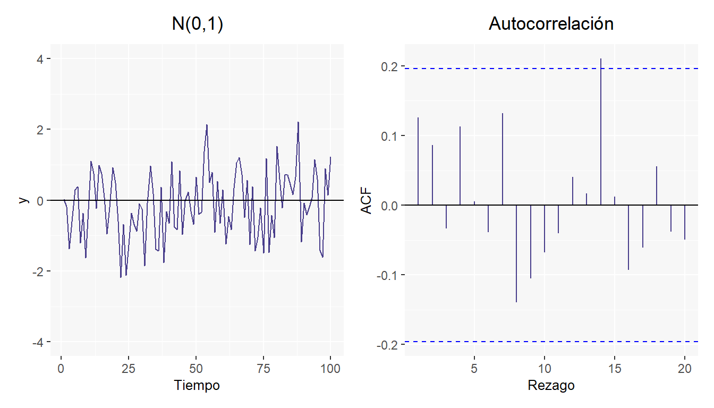

Capítulo 3 Procesos estocásticos
La palabra estocástico, que tiene origen Griego, era usada bajo el significado de perteneciente al azar. En ese sentido un proceso estocástico se define como un conjunto de variables aleatorias ordenadas según el tiempo (o el espacio que corresponda), el cual puede ser continuo o discreto. Se denota la variable aleatoria en el tiempo \(t\) por \(X(t)\) o \(X_t\) con \(-\infty < t < \infty\) en caso de ser continua o bien \(t = (0, \pm1, \pm2, ... )\) en caso de ser discreta.
Como un ejemplo de proceso estocástico tenemos, el número de personas que esperan en una fila en el instante \(t\) del tiempo.
3.1 Proceso estocástico estacionario
Al trabajar con series de tiempo el escenario ideal sería trabajar con series que posean la característica de tener la media y la autocovarianza constantes a lo largo del tiempo, es decir, que sus valores oscilen dentro de un rango de valores y no muestren tendencia clara, creciente o decreciente, teóricamente conocidos como procesos estacionarios. Para definir un proceso estocástico como un proceso estacionario es sumamente necesario conocer la función de densidad conjunta de las variables aleatorias que conforman el proceso, no obstante, en la práctica no es común que se logre. Es por esto por lo que los procesos estacionarios se pueden definir de la siguiente forma:
Procesos estrictamente estacionarios: Se dice que un proceso \(X_t, t \in Z\) es estrictamente estacionario, si sus funciones de densidad para un conjunto arbitrario de variables \(X_t,X_{t+1}, ... , X_{t+m}\) son invariantes respecto a desplazamientos en el tiempo, es decir, que cumplen: \[ \begin{array}{cc} f(X_t,X_{t+1}, ... , X_{t+m}) = f(X_{t+k}, X_{t+k+1}, ... , X_{t+k+m}) & \forall t, m, k \in Z \end{array} \]
Procesos débilmente estacionarios: Un proceso \(X_t,t\in Z\) se dice que es débilmente estacionario de orden \(k\) si los primeros \(k\) momentos son invariantes a través del tiempo. Podemos definir un proceso débilmente estacionario de segundo orden si cumple lo siguiente:
- \(E\left[|X_t|^2\right]< \infty \forall t \in Z\)
- \(E[X_t] = \mu \ \ \forall t \in Z\), lo cual quiere decir que las esperanzas de las variables aleatorias son independientes del tiempo por lo cual permanecen constantes.
- \(Cov(X_t,X_s) = Cov (X_{t+m}, X_{s+m}) \forall t, s, m \in Z\), es decir las covarianzas de dos variables aleatorias del proceso que se encuentran en distintos puntos del tiempo dependen solamente del lapso transcurrido entre cada una de ellas.
3.2 Ruido blanco (“white noise”)
Un ruido blanco1 es un caso simple de los procesos estocásticos, donde los valores son independientes e idénticamente distribuidos a lo largo del tiempo con media cero e igual varianza, se denota por \(\epsilon_t\). \[ \begin{array}{c} \epsilon_t \sim N(0,\sigma^2)\\ Cov(\epsilon_{t_i},\epsilon_{t_j})=0 \space \forall t_i \neq t_j \end{array} \]

La segunda gráfica lleva el nombre de correlograma, la cual esta creada con los valores de autocorrelación, los cuales se verán en el siguiente capítulo.
3.3 Caminata aleatoria
Es un proceso estocástico \(X_t\) donde la primera diferencia de este proceso es un ruido blanco: \(\nabla X_{t} = \epsilon_t\)
La anterior gráfica esta basada en 100 simulaciones de una normal estándar bajo con una semilla en 123.
3.4 Series de tiempo
Según las características de las series de tiempo estas pueden clasificarse en:
Estacionarias: Una serie de tiempo estacionaria es estable a lo largo del tiempo, es decir su media, varianza y autocovarianza (en diferentes rezagos o diferentes tiempos) son constantes en el tiempo.
Es decir que sin importar el momento en que se midan (invariantes respecto al tiempo) se debe cumplir lo siguiente:
- Media: \(\mathbb{E}(X_t) = \mathbb{E}(X_{t+k}) = \mu\)
- Varianza: \(Var(X_t) = Var(X_{t+k}) = \sigma^2\)
- Covarianza: \(\mathbb{E}[(X_t-\mu)(X_{t+k}-\mu)] = \gamma_k\)
Aquí se muestra un ejemplo en el cual la varianza no cambia a lo largo del tiempo y la media permanece constante
No estacionaria: Son series en las cuales la tendencia y/o variabilidad cambian en el tiempo. Los cambios en la media determinan una tendencia a crecer o decrecer a largo plazo, por lo que la serie no oscila alrededor de un valor constante. Existen muchos casos en este tipo de series, aquí se muestran algunos ejemplos.
En resumen, si una serie es estacionaria, su media, su varianza y su autocovarianza (en diferentes rezagos) permanecen iguales sin importar el momento en el cual se midan; es decir, son invariantes respecto al tiempo.
3.5 Ejercicios
Reproducir la caminata aleatoria con semilla (123) mostrada en la gráfica anterior. Ver ¿qué sucede al aumentar el número de simulaciones \((n=1000)\)? ¿Por qué sucede este nuevo comportamiento?
Un proceso es estacionario débil en orden 2 si tiene media y varianzas constantes (Seleccione la opción correcta)
- Cierto
- Falso
- Utilizar los datos en el objeto “AirPassengers” que corresponden a 144 mediciones del número de pasajeros mensuales en líneas aéreas y grafique la serie de la diferencia de los logaritmos de los datos.¿El gráfico sugiere que un modelo estacionario podría ser apropiada para las diferencias de los logaritmos?
Bibliografía
El nombre de ruido blanco puede explicarse fácilmente en el análisis espectral en series de tiempo, el cual hace un estudio sobre la frecuencia y no tanto sobre el tiempo. Este no se verá en este material pero se puede estudiar a detalle esto en el libro Cryer and Chan (2008). Bajo un análisis espectral, en un proceso de ruido, su función de densidad espectral (se puede pensar la densidad espectral como la cantidad de varianza en un intervalo \((\omega, \omega+d\omega)\) que aporta un modelo basado en una serie de Fourier) es constante, es decir que esto sucede para todas las frecuencias. Esto es análogo al espectro de luz blanca en el ámbito físico; ya que todos los colores se distribuyen uniformemente para formar la luz blanca.↩︎